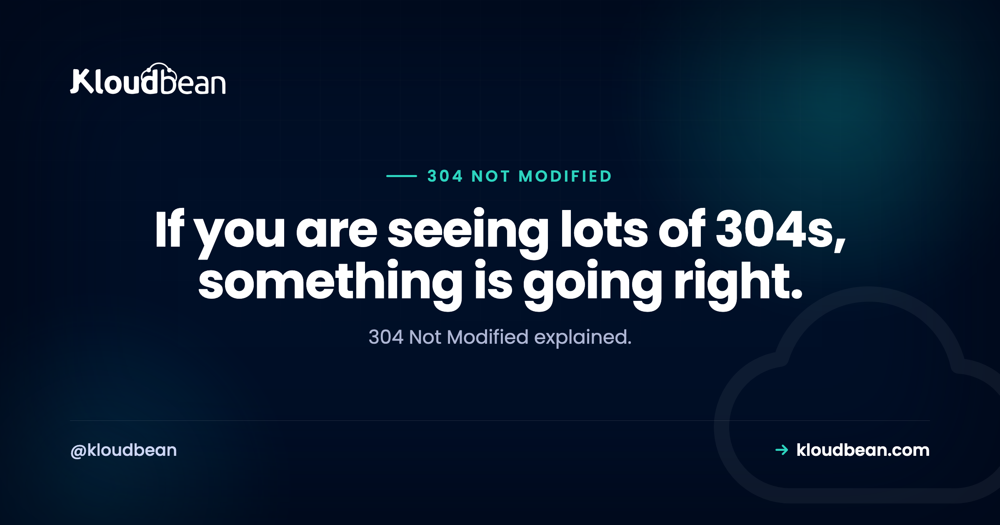

304 Not Modified Is Not an Error: It Is Your Cache Working

A 304 Not Modified is a success response that people keep finding in lists of errors. It means a browser asked whether its stored copy of something was still current, your server checked, and the answer was yes, so no body was sent. The visitor gets the file from their own disk and you save the bandwidth and the transfer time. That is the entire mechanism working exactly as designed. If your logs are full of 304s for static assets, that is a healthy site rather than a broken one.
It means the browser sent a conditional request asking whether its cached copy was still valid, and the server confirmed it was, so the response has no body. The browser then uses its stored copy. This saves bandwidth and is what you want. A 304 only indicates a problem in two situations: when users keep seeing an outdated file after you deployed a new one, which is a versioning issue rather than a 304 issue, and when validators are inconsistent across several servers so caching never works properly.
How the conversation actually goes
Understanding the exchange makes the rest of this obvious. On the first request, your server sends the file along with one or both validators:
HTTP/2 200
etag: "a1b2c3d4"
last-modified: Wed, 15 Jul 2026 09:12:04 GMT
cache-control: public, max-age=3600Later, when the browser wants that file again and its max-age has elapsed, it does not simply download it. It asks whether anything changed, quoting what it already holds:
GET /app.js
If-None-Match: "a1b2c3d4"
If-Modified-Since: Wed, 15 Jul 2026 09:12:04 GMTThe server compares. If nothing changed, it answers with a 304 and no body. If something changed, it answers 200 with the new file and a new ETag.
So a 304 is a two-part saving. The bytes of the file are not transferred, and the browser does not have to parse or re-execute anything it already has. On a page with thirty assets, that is the difference between a fast repeat visit and a slow one.
You can watch it happen directly:
# First request: note the ETag
curl -sI https://example.com/app.js | grep -iE 'etag|last-modified|cache-control'
# Ask again with that ETag: expect 304
curl -sI -H 'If-None-Match: "a1b2c3d4"' https://example.com/app.js | head -1If the second command returns 200 rather than 304, your server is not honouring conditional requests, and every repeat visitor is downloading files they already have.
ETag or Last-Modified?
| ETag | Last-Modified | |
|---|---|---|
| Compares | An opaque token, usually content-derived | A timestamp |
| Precision | Exact | One second |
| Catches a revert | Yes, content is what matters | No, the time changed |
| Works across servers | Only if generated consistently | Usually, if mtimes match |
| Request header | If-None-Match | If-Modified-Since |
Send both where you can. ETag is the stronger signal because it reflects content rather than time, which means a file reverted to a previous version is correctly recognised as different from the one the browser holds. Last-Modified is a useful fallback and its one-second granularity is occasionally too coarse for files that change rapidly.
The Apache ETag problem behind a load balancer
Worth its own section because it silently removes the benefit of caching for anyone running more than one server, and the symptom is invisible: nothing breaks, everything is just slower and more expensive than it should be.
Apache's default ETag is built from the file's inode, modification time, and size. The inode is a filesystem-level identifier, and the same file deployed to two servers will normally have different inodes. So server A issues one ETag and server B issues a different one for byte-identical content.
Now a visitor's request lands on A, caches the file with A's ETag, then later lands on B. B compares the quoted ETag against its own, sees a mismatch, and returns a full 200 with the whole file. The visitor re-downloads something they already had, and it happens for roughly every request that changes server.
The fix is to drop the inode from the calculation:
# Apache: exclude INode so identical files produce identical ETags
FileETag MTime Sizenginx does not have this problem, because its ETag is derived from modification time and content length rather than the inode. If you are behind a load balancer on Apache, though, this is worth checking today. It is a one-line change with a measurable effect on repeat-visit performance and on transfer volume.
The real problem people are actually searching for
Most people looking up 304 are not curious about the status code. They deployed a change and users are still seeing the old file. That is a genuine problem and 304 is the messenger rather than the cause.
Trying to solve it by disabling caching is the wrong direction, because you then pay full transfer for every asset on every visit forever to solve a problem that occurs on deploys. The correct answer is fingerprinting: put the content hash in the filename so a changed file is a different URL.
app.a1b2c3d4.js ← changes name whenever content changes
styles.9f8e7d6c.cssThen set caching by file type, which is the pattern every modern build tool is designed around:
# Fingerprinted assets: cache hard, they can never be stale
location ~* \.[0-9a-f]{8}\.(js|css|woff2)$ {
add_header Cache-Control "public, max-age=31536000, immutable";
}
# HTML: always revalidate, it is what points at the assets
location ~* \.html$ {
add_header Cache-Control "no-cache";
}The logic is worth stating because it is the whole idea. HTML is checked on every visit, which is cheap because it is small. The HTML names the current asset filenames. Those assets are cached for a year and marked immutable, which is safe precisely because a new build produces new filenames. Deploy, and the next HTML request points at the new files. No stale assets, no cache purging, no asking users to hard-refresh.
The immutable directive is a small extra win: it tells the browser not to bother sending a conditional request at all, so you skip even the 304 round trip.
When a 304 genuinely indicates something wrong
| Symptom | Cause | Fix |
|---|---|---|
| Users see old files after a deploy | No fingerprinting on assets | Hash the filenames |
| Never any 304s, always 200 | Validators not sent or not honoured | Check ETag and Last-Modified |
| Poor caching with several servers | Inconsistent ETags, often Apache inodes | FileETag MTime Size |
| 304 on a personalised page | Validator ignoring what varies | Use private, add Vary |
| Stale content behind a CDN | Edge cache holding a copy | Purge, and fix the origin headers |
| Assets re-downloaded every visit | no-store where it is not needed | Use no-cache or a real max-age |
That fourth row deserves care because it is the one with a security dimension. If a page varies by user, by language, or by device, and your validators do not reflect that, a cache can serve one visitor's version to another. Mark personalised responses private so shared caches do not store them, and use Vary to declare which request headers change the response. A public cache in front of a page that varies by cookie without a matching Vary is a real exposure rather than a performance nuisance.
Reading your own logs
A quick way to see whether validation is working at all:
# Status code distribution in the access log
awk '{print $9}' /var/log/nginx/access.log | sort | uniq -c | sort -rn | head
# Which assets are returning 200 repeatedly instead of 304?
awk '$9==200 {print $7}' /var/log/nginx/access.log | sort | uniq -c | sort -rn | head -20A healthy site serving returning visitors shows a substantial share of 304s. If that second command lists the same handful of static assets thousands of times with a 200 each, you are paying to send files people already have, and the fix is header configuration rather than more bandwidth.
Where hosting fits
Caching headers are configuration, and getting them right is a genuine performance lever that costs nothing to pull. On Kloudbean, nginx comes configured rather than left at defaults, which matters because the defaults are conservative and most people never revisit them. Because the platform runs nginx, the Apache inode ETag problem above does not apply. Cloudflare is available as a paid add-on and included for enterprise accounts, which adds edge caching in front of the origin so validated responses do not need to reach your server at all, and managed Redis handles the application-level caching that sits behind it.
The honest boundary: nobody else can fingerprint your assets, because that is a build configuration in your own project. What the platform gives you is a sensible starting point and somewhere to test header changes before your visitors meet them.

Related reading
On the caching layer in front of your origin, CDN explained. For application-level caching, the Redis caching guide and caching patterns. On the browser error caused by the opposite mistake, ERR_CACHE_MISS. For redirect status codes, 302 vs 301. On headers generally, the security headers guide. And on WordPress caching specifically, clearing WordPress cache and speeding up WordPress.
Stop paying to send files people already have.
Managed servers with nginx configured properly, Cloudflare available as an add-on for edge caching, managed Redis for application caching, and staging to test header changes safely. Free migration assistance included. Start at kloudbean.com.
Managed nginx · Cloudflare edge caching · Managed Redis · Staging sites · One dashboard
FAQ
Is 304 Not Modified an error?
No, it is a success response. It means the browser asked whether its cached copy was still current, the server confirmed it was, and no body needed sending. The visitor loads the file from their own disk. Seeing many 304s for static assets is a sign your caching is working, not a problem to fix.
What causes a 304 response?
A conditional request. When a cached file's freshness period has elapsed, the browser re-requests it with If-None-Match or If-Modified-Since, quoting the ETag or timestamp it already holds. If the server finds nothing has changed, it answers 304 with no body rather than resending the file.
Why do users still see old files after I deploy?
Because the filename did not change, so browsers have no reason to think the content did. Disabling caching is the wrong fix, since you then pay full transfer on every visit. Instead, fingerprint assets by including a content hash in the filename, cache those for a long period with immutable, and serve your HTML with no-cache so it always points at the current filenames.
Should I use ETag or Last-Modified?
Send both where you can. ETag is the stronger validator because it reflects content rather than time, so a file reverted to an earlier version is still correctly identified as different. Last-Modified is a reasonable fallback, though its one-second granularity can be too coarse for files that change frequently.
Why does caching work badly across multiple servers?
Often inconsistent ETags. Apache's default includes the file's inode, which differs between servers for identical content, so a browser that cached from one server gets a full 200 from another instead of a 304. Set FileETag MTime Size to exclude the inode. nginx derives its ETag differently and does not have this problem.
How do I check whether my server returns 304s?
Request a file, note its ETag, then request it again sending that value in an If-None-Match header and check the status line. A 304 means validation is working. A 200 means your server is not honouring conditional requests, and every returning visitor is re-downloading files they already have.
Can a 304 serve the wrong content to a user?
It can if your validators ignore what makes a response different per visitor. A page that varies by user, language, or device needs to be marked private so shared caches do not store it, with a Vary header declaring which request headers change the response. A public cache in front of a page that varies by cookie without a matching Vary is a genuine exposure.
What is the immutable Cache-Control directive for?
It tells the browser the file will never change at that URL, so there is no need to send a conditional request at all. That skips even the 304 round trip. It is only safe on fingerprinted assets whose filename changes with their content, and it pairs naturally with a very long max-age.